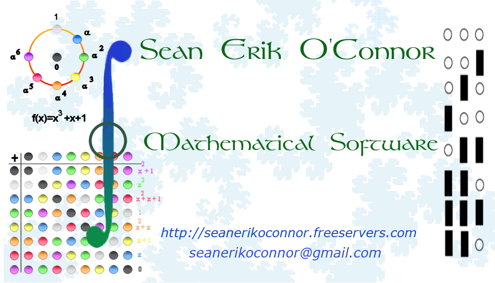
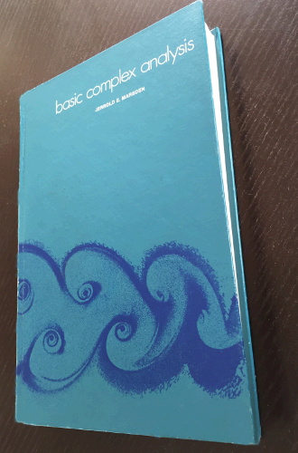
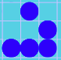

Mathematical Software

{kind=link}
Abstract and Linear Algebra
- A C++ program for Computing Primitive Polynomials of degree n modulo p for any value of n and p < 2147483648
-
An in-depth

Primitive Polynomial Tutorial on the algorithms used.
Signal Processing
- C++ code for a power of two Fast Fourier Transform
Communication (Information) Theory
Pseudonoise Sequences
Computer Science
Automata
-

Game of Life written in JavaScript whose grid is the surface of a torus.
Formal Language Theory
- LR(k) and LALR(k) Parser Generator and Parser which allows epsilon productions written in Common Lisp
- LR(k) and LALR(k) Parsing Theory briefly explained.
Software Engineering
- Setting up a software development environment for Mac OS and Linux (Ubuntu).
Finance
- Deriving formulas for Mortgage Loans. Here's the $\LaTeX$ file and its syntax highlighted $\LaTeX$ source listing. Refer to the wonderful Not So Short Introduction to $\LaTeX$; here's the link to latest version.
- Periodic payment investment return using SageMath.